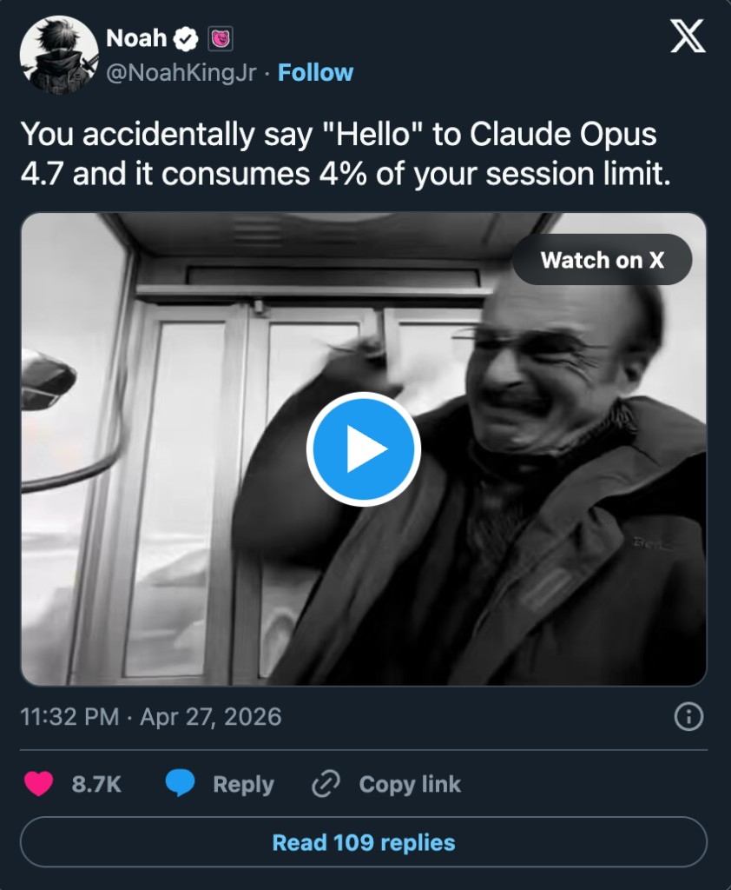

Stop wastage of tokens.
Kakapo is the AI gateway for teams that care about cost, speed, and control. Get in touch: hi@trykakapo.com
Already using Kakapo?
Sign in

Kakapo is the AI gateway for teams that care about cost, speed, and control. Get in touch: hi@trykakapo.com